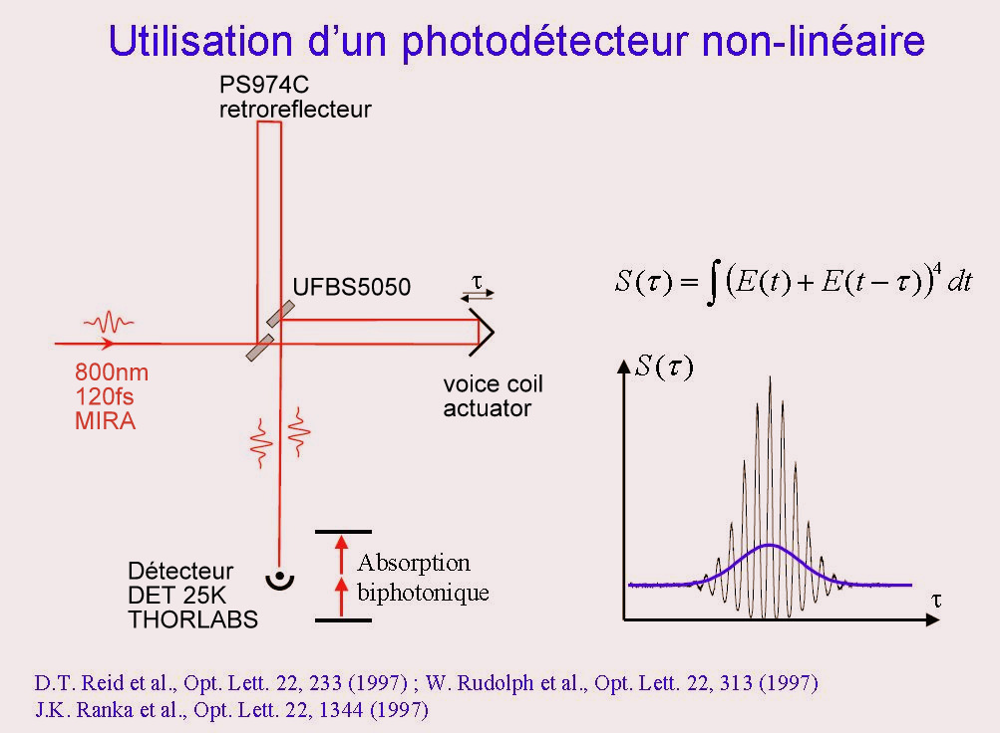
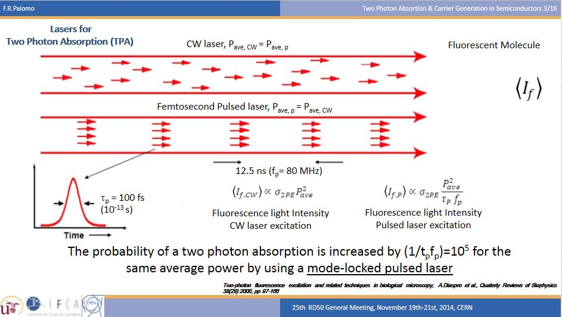
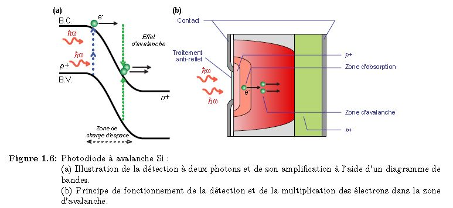
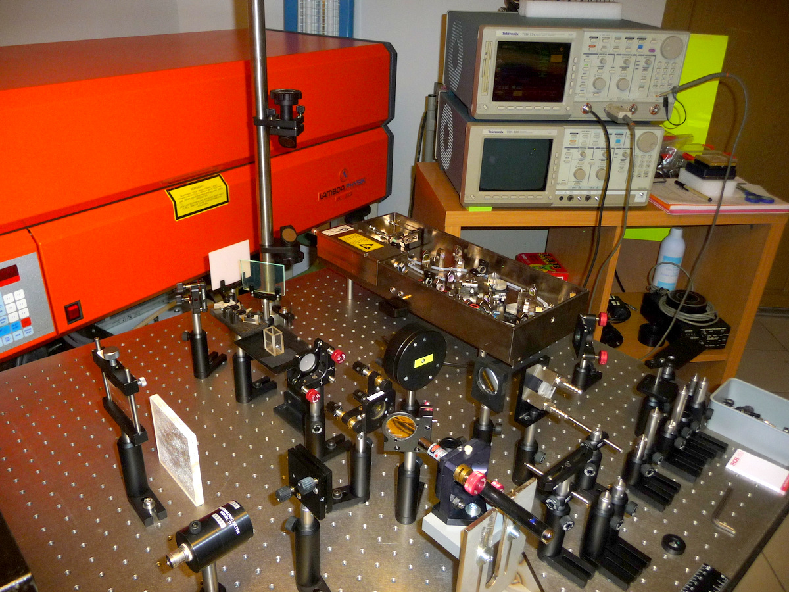
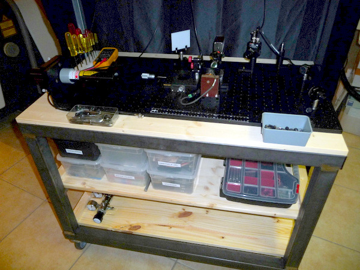

Réalisation autocorélateur
Réalisation d'un autocorrélateur optique interférométrique multi-coups, utilisant une photodiode GaP en régime d'absorption à 2 photons.
|
Introduction
Mesurer avec une photodiode la durée d'une impulsion de lumière produite par un laser femtosecondes (1fs=10-15s) est impossible en soumettant directement celle-ci aux impulsions.
En effet le temps de réponse des meilleurs photodiodes commercialisées aujourd'hui permet de caractériser des pulses de l'ordre de 200ps, donc très loin de la rapidité dont nous avons besoin !
Heureusement, depuis de nombreuses années les spécialistes du domaine femtoseconde ont développés des instruments capables de contourner ce problème.
L'une des premières méthodes à avoir été utilisée est l'autocorrélation optique (AC), c'est cette méthode que nous allons mettre en oeuvre ici.
Elle présente l'avantage d'une relative simplicité et d'un moindre coût par rapport aux méthodes plus raffinées d'aujourd'hui, telles que les FROG, SPIDER, SPIRIT, RABBIT… et autres instruments aux noms bizarres.
Par contre elle présente l’inconvénient de ne pas donner accès à toute l'information, notamment à la phase temporelle de l'impulsion qui est perdue lors de la mesure, et donc de ne pas être en mesure de caractériser l'évolution temporelle précise de cette impulsion.
Cela dit l'autocorrélation optique interférométrique reste une méthode de base qui donne des résultats satisfaisants en première approximation.
La société THORLABS allemagne s'est proposée de nous fournir les composants optiques et détecteurs pour la réalisation de cet autocorrélateur interférométrique.
|
Préparation d'une 1er version utilisant un "voice coil" monté sur une coulisse à bille muni d'un miroir de 12mm de diamètre.
|
Principe de l'autocorrélateur interférométrique
L'autocorrélateur est constitué d'un interféromètre de Michelson et d'une photodiode qui va
fonctionner en régime d'absorption à 2 photons, comme on peut le voir sur le schéma suivant.
|
Dans notre montage final un laser accordable Titane:Saphir MIRA900, réglé à 800nm, fournit des impulsions de lumière de 120fs FWHM.
L'impulsion pénètre dans l’interféromètre, elle est divisée en deux impulsions d'intensité égale par une lame séparatrice 50:50.
L'une des impulsions est réfléchit par un miroir triprism fixe, l'autre impulsion est aussi réfléchit par un miroir du même type, mais celui-ci est mobile, mu d'avant en arrière le long du chemin optique par un voice-coil à une fréquence de l'ordre de quelques dizaines de hertz.
Cela permet donc de décaler temporellement, à volonté, l'une des impulsions par rapport à l'autre lors de la recombinés par la séparatrice. De plus cette recombinaison se fait de façon colinéaire, comme on peut le voir sur le schéma, la somme des deux champs permettant ainsi le phénomène d'interférence.
Ce champs résultant est ensuite envoyé sur la photodiode qui converti celui-ci en un signal électrique.
Ce signal électrique est le résultat d'un processus de conversion non-linéaire au sein de la photodiode qu'on peut exprimer mathématiquement en disant que le signal d'autocorrelation S(tau) est égale à l'intégrale du module au carré de la somme au carré du champ issu du miroir fixe et du champ retardé issu du miroir mobile (cette explication nécessite un développement que nous ferons plus tard).
Lorsqu'on trace ce signal S(tau) en fonction de tau, on obtient une figure ( voir sur l'image) dont l'enveloppe à mi-hauteur permet, si on a au préalable une idée de la forme de l'enveloppe de l'impulsion issu du laser, de déduire la durée à mi-hauteur (FWHM) de cette dernière et donc
d'estimer de façon assez précise la durée de l'impulsion laser.
|
|  |
Principe de l'absorption à deux photons (biphotonique, encore noté TPA en anglais)
|
Unité Goppert-Mayer 1 GM = 1.10-50cm4.s photons
|
|  | Pour que l'absorption à 2 photons se produise dans le semi conducteur, il faut que 2 photons soient ensemble au même endroit et en même temps (RENDEZ-VOUS SPATIO-TEMPOREL)
La possibilité de la rencontre des 2 photons est limitée dans le temps par la durée de vie de l'état virtuel qui est de 100 attosecondes (1atto=10-18s).
Pour augmenter la chance que les 2 photons se rencontrent il faut DONC deux conditions :
1- au niveau temporel il faut réduire la durée d'émission tout en conservant le nombre de photons
donc le flux photonique (W/cm²)
2- au niveau spatial il faut réduire la surface d'éclairement au moyen d'une lentille !
En jouant sur ces 2 facteurs, avec un laser pulsé on augmente la probabilité d'interaction des photons d'un facteur 105 à 106 par rapport à celle obtenue avec un laser continu.
|
|

Pour que l'absorption à 2 photons génère la création d'un électron dans la bande de conduction du semi-conducteur, il faut que la somme des énergies des 2 photons soit supérieur au gap de la bande interdite du semi-conducteur.
Exprimé autrement il faut que l'un des deux photons aie une énergie au minimum égale à la moitié de l'énergie de la bande interdite.
Un des avantages de l'absorption à deux photons dans un semi-conducteur, par rapport à l'utilisation d'un cristal non-linéaire, est une réponse spectrale étendue: la photodiode permet de faire des mesure sur une plage étendue de longueurs d'ondes, ce qui n'est pas le cas avec un cristal nonlinéaire.
La photodiode permet également de s'affranchir des difficultés imposées par le processus d'accord de phase dans les cristaux non linéaire.
|
La société THORLABS à proposé de nous fournir les composantes nécessaires pour réaliser cette autocorrélateur interférométrique du second ordre avec leur détecteur DET25K qui contient une diode GaP avec une surface réceptrice de 4.8mm2et une capacité de 1000pF @ 0V.
Le temps de montée est de 1ns et le temps de descente de 140ns @ 5V ..... !
Or ce que nous voulons mesuré sont des pulses lasers de 10fs à 10ps soit environ 100'000 fois plus court !
Le processus d'absorption à 2 photons permet cette chose.
La durée de l'état virtuelle est de 100 attosecondes 10-16s.
|
|
|
| Le photodetecteur DET25K de THORLABS est muni d'un filtre interférentiel FELH0700 qui bloque la lumière entre 150nm et 700nm zone dans laquelle se trouve la sensibilité de la diode FGAP71.
Seuls les impulsions à 800nm traverseront donc le filtre interférentiel puis seront concentrées au moyen d'un objectif de microscope à grande ouverture numérique sur la photodiode GaP.
L'énergie de la bande interdite pour l'absorption de 2photons à 800nm est situé à 400nm (3,2 eV) avec une sensibilité de 0.11A/W.
Avec cette diode il doit aussi être possible de travaillé avec de l'absorption à 2 photons entre 600nm jusqu'à 1050nm!
Ce qui permettrait de faire des mesures sur des lasers à colorant tel que RhodamineB, Kiton Red, oxazine750, Pyridine2 , laser Titane saphir, YAG:Nd.
Pour des lasers situés entre 400nm et 300nm des diodes au GaN (nitrure de gallium) conviennent très bien.
Les diodes au silicium permettent de travaillé entre 1200nm et 2000nm.
|
|
|  |  |
| La réalisation de l'expérience est en cours de préparation ....... des photos et mesures suivront! |
L'auto-corrélateur se compose de 2 parties qui sont:
Un interféromètre de MICHELSON qui permet de faire interférer l'onde à analyser avec l'onde de référence pour cela on déplace un des miroirs d'une distance Lm1 qui dépend de la durée du pulse laser à analyser. Cette distance est de 150 microns pour un pulse de 1ps et de 15cm pour un pulse de 1ns (1000ps)
Pour faire ces mesures j'ai réalisé un banc de mesure sur une table optique mobile permettant de la déplacer à coté du laser à mesurer.
La 2 ème partie est la détection du signal interférométrique au moyen de l'absorption à double photon dans un semi-conducteur GaP.
Dans une première série de mesures nous utilisons un "voice coil" qui actionne un support de miroir sur une glissière à bille.
Une 2ème série de mesures se fera avec un "voice coil" muni sur sa tige d'un rétro-réflecteur (tri-prisme)
Une 3ème série de mesures sera faite avec un miroir collé sur un transducteur piézo-électrique (PbTiO3) utilisé pour mesurer des pulses femtosecondes 10fs Lm1= 1.5 micron !
Le détecteur en régime absorption à 2 photons à une résolution inférieur à la femtoseconde !
Une 4ème série de mesure sera effectuée avec un miroir monté sur une coulisse de 150mm de course muni d'un moteur pas à pas ce qui permettra de mesurer des pulses entre
10fs et 1ns.
|
|  |
|
|